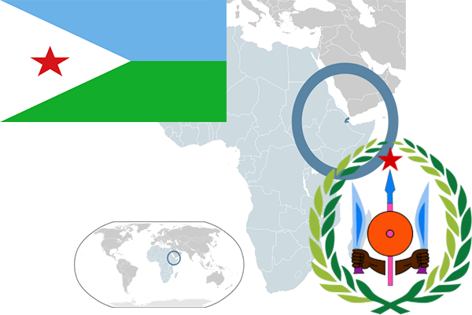

To`liq nomi: Jibuti Respublikasi
Region: Shimoliy-sharqiy Afrika
Qonunchilik shakli: Respublika
Mustaqillik kuni : 27-iyun 1997 yil (Fransiyadan)
Poytaxt: Jibuti
Maydoni: 23 200 km² (dunyoda 147 -o`rinda )
Chegaradosh davlatlari: Eritreya, Somoli, Efiopiya
Aholisi: 818 169 (dunyoda 171 -o`rinda, 2009 -yil roʻyxat)
Aholi zichligi: 35,27 /km²
Aholining o`rtacha yoshi: 43,3 yil ( 44,7 ayollar, 41,9 erkaklar)
Rasmiy tili: Arabcha va Fransuzcha
Dini: 94% musulmonlar, qolgan qismi mahalliy dinga e`tiqod qiluvchilar
Pul birligi: Jibuti franki
Telefon prefiksi: +253
Internet domen: .dj
Xalqaro tashkilotlarga a`zoligi: BMT (1977– yildan), Arab davlatlar uyushmasi (04,09,1997)
Dengiz va okeanlarga chiqishi: Arab dengizi
YIM: Butun: $ 1 570 mln, Jon boshiga: $ 1878 (2010 - yil roʻyxati)
Yirik shaharlari: Jibuti